Java类加载机制
Java类加载机制
1. 对象加载流程
当 JVM 收到一条创建对象的指令时，需要经过以下过程：
- JVM 对类采用懒加载的方式，避免启动时大量占用 CPU 和内存，因此创建对象前，需要先检查常量池中是否存在目标类的符号引用；
- 如果存在，说明类已被加载，JVM 将在堆区为新生对象分配一块内存，分配方式有「指针碰撞」和「空闲列表」两种，分配过程通过 CAS 保证原子性。
- 指针碰撞：如果Java堆是绝对规整的，所有用过的内存都放在一边，所有没用过的内存存放在另一边，中间存放一个指针作为分界点指示器。分配内存时，将指针从用过的内存区域向空闲内存区域移动等距离区域。
- 空闲列表：如果Java不是规整的，这时，虚拟机就必须维护一张列表，列表上记录了可用的内存块，在分配内存时，从列表上找到一个足够大的连续内存块分配给对象，并更新列表上的记录。
- 如果不存在，说明类信息仍未被加载，需要先加载目标类，然后再继续完成新生对象的加载。
- 如果存在，说明类已被加载，JVM 将在堆区为新生对象分配一块内存，分配方式有「指针碰撞」和「空闲列表」两种，分配过程通过 CAS 保证原子性。
- 初始化内存空间内的信息：新生对象在堆区分配内存后，将内存空间中的非静态成员变量都用默认值初始化（静态变量在类的加载流程中就已经初始化），因此成员变量在声明时可以不必显式初始化。
- 初始化内存空间的基本信息：计算哈希值、记录所属类的信息等。
- 继续执行代码指定的初始化，例如构造方法、代码块等。
- 按照顺序也可以看出，非静态成员变量的初始化发生在构造方法调用之前，非静态成员变量的初始化在效果上等同于一个非静态的代码块。
- 将堆区的对象内存链接到栈区的引用。
至此对象已经创建完毕。但 Java 中栈区的引用和堆区的对象只是一种链接方式，引用如何通过访问指向的对象内存完成方法调用、数据读写，则是由虚拟机实现的。主要的实现方式有两种：
- 句柄访问：JVM 在堆区独立划分一块句柄池，每当一个对象在堆区创建后，JVM 都将对象在堆区的实际地址存入句柄池作为一条句柄，然后将栈中的引用链接到该句柄，因此引用实际指向的是一条句柄，再由该句柄指向堆中的对象内存。
- 优势：由于引用指向的是句柄，因此当堆中的内存发生改变时（例如被 GC），不需要改变引用的指向，只需要改变句柄指向的内存，这种情况下引用的指针是稳定的。
- 劣势：更多的引用意味着访问实际内存时会带来额外性能开销。
- 直接指针：JVM 直接将栈区的引用指向堆区的对象内存，引用可以直接操作内存指针访问，因此相比句柄访问减少了一个指针。
- 优势：由于指针更少，因此从引用访问实际内存时，性能开销更小。
- 劣势：当堆区内存经常改变时，引用的指针也需要经常改变，指针的指向是不稳定的。
- HotSpot 虚拟机采用的是直接指针。
对于句柄访问，从应用层来看比较难理解其引用指针稳定带来的好处，但从 JVM 实现上来看，JVM 的开发人员可以不用关注堆区的对象是否改变，以及改变后对栈区引用的重定向等问题，因此这个优劣势更多是面向 JVM 层而不是应用层的。
2. Java类生命周期
通过上文可知，JVM 在创建对象时，如果目标类还未加载就需要先加载类。对于一个运行中的 JVM，其读取的类是已经编译成二进制字节流的 class 文件，class 文件中包含了对这个类信息的描述，因此类的加载流程，本质上就是 JVM 读取并校验 class 文件中的数据；然后将这些数据转换、解析、以及初始化；最终成为可以被 JVM 直接读取的内存。从一个类被 JVM 加载进内存到被 JVM 卸载清理的流程如下：

2.1 类的加载
- 加载：主要是读取 class 文件；
- 通过类的全限定名获取对应 class 文件的二进制字节流。
- 将这个字节流所代表的静态存储结构转化为方法区的运行时数据结构。
- 在内存中生成一个代表这个类的
java.lang.Class对象，作为方法区这个类的各种数据的访问入口。
- 验证：为了确保 class 文件中的数据符合 JVM 要求，不会危害 JVM 的稳定性；
- 文件格式验证：验证字节流是否符合 class 文件格式的规范，并且能被当前版本的虚拟机处理，通过该阶段后，字节流会进入内存的方法区中进行储存。
- 元数据验证：对字节码描述的信息进行语言分析，对类的元数据信息进行语义校验，确保其描述的信息符合 Java 语言规范要求。
- 字节码验证：通过数据流和控制流分析，确定程序语义是合法的、符合逻辑的。这个阶段对类的方法进行校验分析，保证类的方法在运行时不会做出危害虚拟机安全的事件。
- 符号引用验证：对类自身以外的信息（常量池中各种符号引用）的信息进行校检，确保后续解析阶段能正常执行。
- 准备：为类的静态变量赋默认值；
- 静态成员变量根据变量类型被赋值为 0, false, 或 null。
- 静态常量
static final不会被赋默认值，在编译时会为静态常量标记ConstantValue属性，如果没有则会编译错误。在准备阶段 JVM 会用标记的ConstantValue为静态常量赋值。
- 解析：主要是针对（1）类或接口、（2）字段、（3）类方法、（4）接口方法、（5）方法类型、（6）方法句柄、（7）调用限定符，将常量池中的这 7 种符号引用替换为直接引用。可以理解为，JVM 在加载阶段使用一些符号来描述类的这些信息，但还没有创建实际的内存，然后在解析阶段再实际加载进内存中，并转换为直接引用；
- 符号引用：用一组符号来描述所引用的目标，符号可以是任何字面量，只要使用时无歧义定位到目标即可。符号引用与虚拟机的内存布局无关，引用的目标并不一定已经加载到内存中。符号引用的字面量形式明确地定义在 JVM 规范的 Class 文件格式中，因此各种虚拟机实现的内存布局可以不相同，但是他们能接受的符号引用必须都是一致的。
- 直接引用：直接引用是可以直接定位到目标的指针、相对偏移量或是一个能间接定位目标的句柄。直接引用是与虚拟机的内存布局相关的，同一个符号引用在不同虚拟机实例上翻译出来的直接引用一般不会相同。如果有了直接引用，那引用的目标必定已经在内存中存在。
- 初始化：按照代码执行的初始化，直到该阶段，JVM 才会真正开始执行构造器的初始化，例如成员变量的赋值、代码块、构造方法等；
- 尽管静态成员变量在准备阶段就已经被 JVM 赋了默认值，但直到初始化阶段才会读取代码中的显式赋值。
- 静态代码块也在初始化阶段才会执行。
- 静态构造块（静态成员变量和静态代码块）的执行顺序取决于 JVM 的读取顺序（通常也就是代码编写顺序）决定。
- 非静态构造块（非静态成员变量和非静态代码块）的执行顺序也取决于 JVM 的读取顺序（通常也就是代码编写顺序）决定，如果一个非静态成员变量在声明后没有立即显式初始化，则也会被赋默认值。
- 在静态成员变量初始化完毕和静态代码块执行完毕、非静态成员变量初始化完毕和非静态代码块执行完毕之后，才会调用构造方法。
2.2 类加载器
JVM 默认提供了 3 种类加载器，如有必要也允许添加自定义的类加载器：
- Bootstrap ClassLoader: 负责加载
lib/目录下的类，以及-Xbootclasspath参数所指定的路径中的类。通常这些类都是 JVM 运行必须且核心的类。 - Application ClassLoader: 负责加载
classPath所指定的用户目录下的类，如果应用程序没有自定义类加载器，则通常使用该加载器作为应用程序中默认的类加载器。Application ClassLoader 也叫 System ClassLoader。
- Extension ClassLoader: 负责加载
lib/ext目录下的类，以及被java.ext.dirs环境变量指定的目录下的类，Android 虚拟机去掉了这个类加载器。
1 | public class ClassLodaer { |
JVM 启动时就会运行 BootStrap ClassLoader，用于加载 Java 核心 API，以及另外两个 ClassLoader：Extension ClassLoader、Application ClassLoade。每一个 ClassLoader 都继承自 ClassLoader 抽象类，如果 getParent() == null 则认为该 ClassLoader 就是 BootStrap ClassLoader。
ClassLoader 在加载 Class 文件时采用双亲委托模式，所有的 ClassLoader 在收到一个加载类的请求时，都会先委托它的 ParentClassLodaer 加载，并逐层向上传递直到 BootstrapClassLoader。当 ParentClassLodaer 无法加载时会返回，再由当前 ClassLoader 尝试加载，并逐层向下返回。因此，加载过程可以看成 自底向上检查 以及 自顶向下加载。这种设计有 3 个优点：
- 使用双亲委派模型来组织类加载器之间的关系，Java 类随着其加载器一起具备了一种带有优先级的层次关系。
- 避免类的重复加载，当父类加载器已经加载过了某个类时，子类收到加载请求后，向上传递给父类时即可判断该类已被加载。
- 避免核心类（如 Object, System 等）被篡改，JVM 在启动时，BootstrapClassLoader 会加载核心类，如果用户尝试加载一个篡改过的类，由于双亲委托制，一定会向上传递到 BootstrapClassLoader，因此就能判断类已加载，即可跳过非法类的加载。
2.3 类资源的初始化
根据上文，类中的静态资源在准备阶段就已经被赋默认值，但所有变量的显式赋值都发生在初始化阶段，静态变量和静态代码块等效、非静态变量和非静态代码块等效、等效的资源按照 JVM 执行顺序初始化；按照该规范即可分析所有资源初始化情况。
（1）静态变量显式赋值在静态代码块之前：
1 | class Demo { |
- 类准备阶段，为静态变量赋默认值
int a = 0 - 类初始化阶段
- 执行静态构造块
- 先执行显式赋值
a = 5 - 再向下执行静态代码块
a = 10
- 先执行显式赋值
- 执行构造方法
- 最终获取到
a == 10
- 最终获取到
- 执行静态构造块
（2）非静态变量显示赋值在非静态代码块之前：
1 | class Demo { |
- 类初始化阶段
- 执行构造块：
- 先执行显示赋值，
a = 5 - 再向下执行非静态代码块
a = 10
- 先执行显示赋值，
- 执行构造方法
- 最终获取到
a == 10
- 最终获取到
- 执行构造块：
（3）变量显式赋值在代码块之后：
1 | // 静态代码块 + 静态成员变量赋值 |
按照一般理解，非静态的成员变量是在类初始化阶段执行到的时候才会定义，那如果在声明之前的非静态代码块引用，应该会报错 Illegal forward reference 才对，但实际上编译是通过的，最终构造方法里都是 a == 5。难道是对于变量赋值也采用了懒加载，执行到代码块中的 a 时，先执行了 a 的定义吗？
1 | // 是否静态是一样的，以静态为例 |
然而，在代码块中只要引用 a 就会编译出错。实际上，等效代码中变量的声明总是应该在被引用之前，唯独「除非该变量位于赋值语句的左值」这种情况例外，其中 等效 指的是「静态代码块与静态成员变量」、「非静态代码块与非静态成员变量」这种关系，等效关系的代码的执行顺序取决于 JVM 读取顺序。如果是非等效关系的代码，则还与 JVM 加载的时机有关。例如上述例子，如果改成：
1 | // 是否静态是一样的，以静态为例 |
由于静态成员变量在类的准备阶段就已经定义且赋默认值，并且在初始化阶段，静态的构造块又先于非静态构造块执行，所以不论编码顺序如何，最终执行到非静态代码块时，a 已经完全初始化了。
3. 热修复（热更新）原理
3.1 代码替换
两个方案：Native替换和Dex插桩。
（1）Native替换
例如阿里的AndFix，是先在Native层找到需要修复的方法的结构体，然后改变其NativeFunc字段值，这个值是用来指定JVM执行方法时在Native层对应的指针位置，也即：Native层在执行代码的时候，不同的方法存在内存中由Native层的指针指向不同的地址里，修改了某个方法后，将新的方法的NativeFunc字段指定为旧方法的，使得Native指针指向的方法所在的内存为新方法所在的内存，来达到替换的效果。
优点是不需要重启就能生效，是基于方法级别的修复。
缺点是不能新增变量和类、方法等，因为如果新增了方法或类，就会导致编译后的Dex中方法数发生变化，则 dexElements[] 中方法的索引就会变化，原来的索引对应的方法就可能发生错乱。
（2）Dex插桩
在编译 Android 代码时，会把代码编译成 dex 字节码，Android 在运行一个 App 时，会通过 ClassLoader 来加载 dex 文件，加载时，越靠前的Dex优先被使用，因此可以通过把热更新后的类或方法编译成的 patch.dex 文件插入到 dexElements[] 数组的头部使得虚拟机只加载修复后的类。
优点是可以做较大的改动，稳定性高，不会侵入进程（因为需要重启才生效）。
缺点是影响性能，安装APK时，如果某个Dex中的类，在static方法、private方法、构造方法、override方法中引用的对象，也在同一个Dex文件内，则虚拟机会给该Class打上CLASS_ISPREVERIFIED已验证标签，运行时对应的对象就直接在当前Dex中找，否则没有打上标签的类，在运行时，就需要遍历所有的Dex查找，会影响性能。但热修复时，打出来的patch.dex，只包含了修复的class，所以绝大部分情况下，是不能打CLASS_ISPREVERIFIED标志的，否则在运行时，在patch.dex中找不到引用的对象，会抛出IllegalAccessError: Class ref in pre-verified class resolved to unexpected implementation错误。所以需要强制不打标志，不打标志就会导致在加载的时候要遍历所有的Dex，因此影响性能。
3.2 资源替换
（1）资源的加载是通过 AssetManager 实现的，通过反射调用addAssetPath，将完整的新资源包加入到AssetManager中来替换掉整个AssetManager中持有的资源。然后查找所有引用了旧AssetManager的地方，通过反射替换为新的AssetManager的引用。
（2）SO库的修复本质上就是对Native方法的修复和替换，把新SO库的路径插入到NativeLibraryDirectories[] 数组的最前面，就能使得Native层加载SO时加载的是新的SO库。